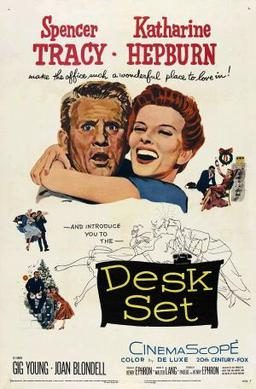

Desk Set
Starring: Katharine Hepburn, Spencer Tracy, Gig Young
Director: Walter Lang
Writer: Phoebe Ephron, Henry Ephron
Producer: Henry Ephron
Desk Set (released as His Other Woman in the UK) is a 1957 American romantic comedy film starring Spencer Tracy and Katharine Hepburn. The movie has science fiction and futuristic themes on the impact of automation and artificial intelligence replacing human labor.
Trivia
- In the play, Bunny Watson (played by Shirley Booth, who was originally intended for the film as well) had only brief, somewhat hostile interactions with Richard Sumner.
- Screenwriters Phoebe and Henry Ephron (the parents of Nora Ephron) built up the role of the efficiency expert and tailored the interactions between him and the researcher to fit Spencer Tracy and Katharine Hepburn.
- Following Desk Set their last film together would be 1967's Guess Who's Coming to Dinner.
Previous Showings
8 Runs • 5 Festivals
Original Billings: 1 run (May 26, 1957)
Original Run: May 26, 1957 (Sunday - Tuesday)
All runs on record (8):
- May 26, 1957 (Sunday - Tuesday)Spencer Tracy, Katharine Hepburn
- June 22 - 26, 1991w/ The African Queen
- December 20 - 22, 1996w/ Christmas in July
- June 22 - 24, 2007Katharine Hepburnw/ Bells Are Ringing
- December 3 - 4, 2011Fall 2011w/ The African Queen
- July 20 - 23, 2013Summer 2013w/ Adam's Rib
- June 30 - July 2, 2017Classic Comedy With Cary Grant, Carole Lombard, W.C. Fields and more!w/ The African Queen
- July 24 - 26, 2019Summer 2019w/ Adam's Rib